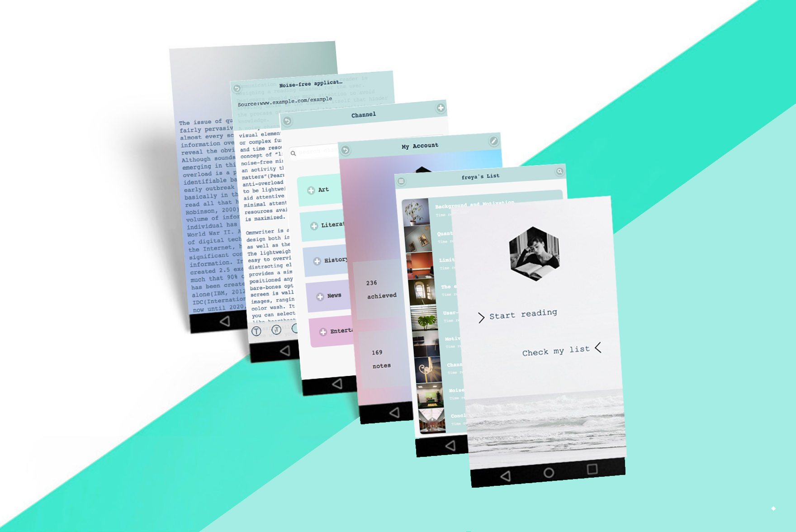

Pureader: Dive in, enjoy deep reading.
Pureader是我硕士毕业设计项目，它是一款旨在提高用户阅读时的专注度和效率的文本阅读器。核心功能是可以将感兴趣的文章离线保存、分类整理，供闲暇时阅读。并通过阅读界面的极简设计和全屏免打扰模式、笔记等功能提升阅读体验。同时所保存的文章“不阅即焚”，用户可以自行设定完成阅读的时限，以此避免用户只存不读，督促其阅读。 遗憾的是受时间和能力所限，它目前只是一个应用模型，技术上只实现了一部分功能，但是基本展示了我的产品设计理念。出于对阅读和Pureader本身的热爱，我并没有终止这一项目，因此也非常欢迎新成员的加入。
In this project, I designed a digital reading tool, named Pureader, that aims to support the needs of users bombarded with online information. This web-based application intends to help the end-user to achieve the better reading experience. Essentially it can be classified into the bookmarking reader which is used to mark articles for later view. On this basis, in order to help the user cope with the problem of information overload, it is enhanced with more innovative features.
Pureader Documentation from freya on Vimeo.
